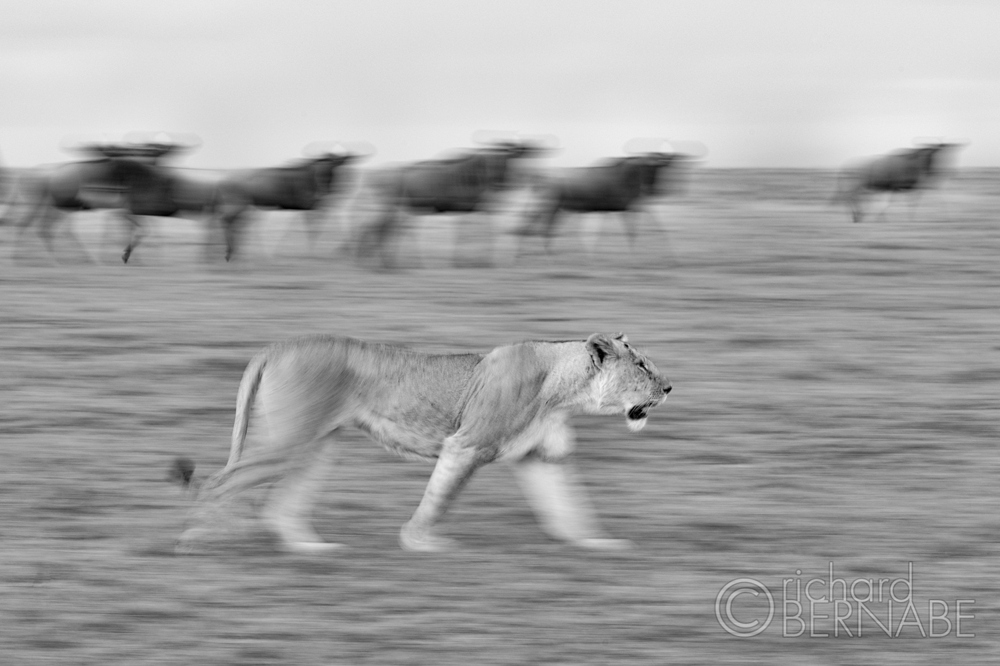
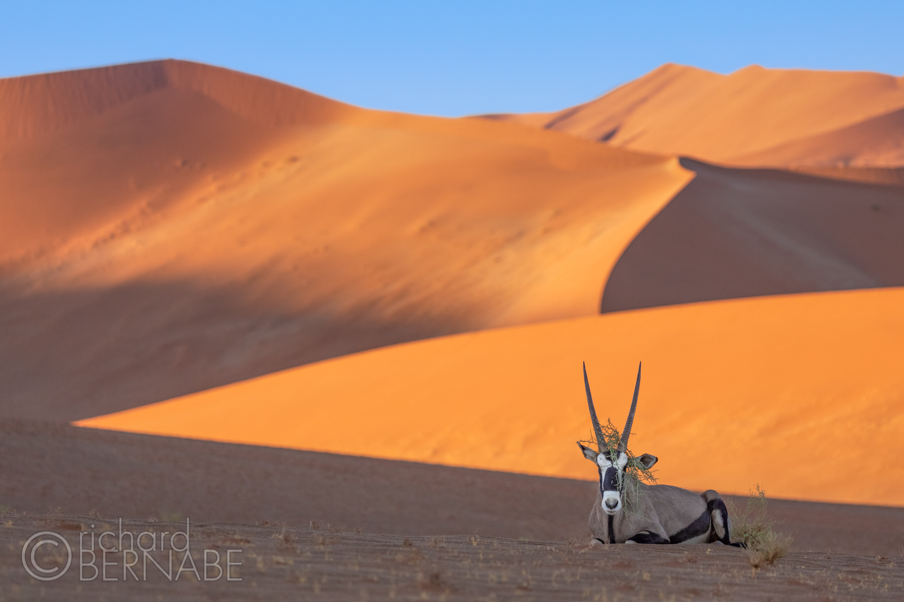
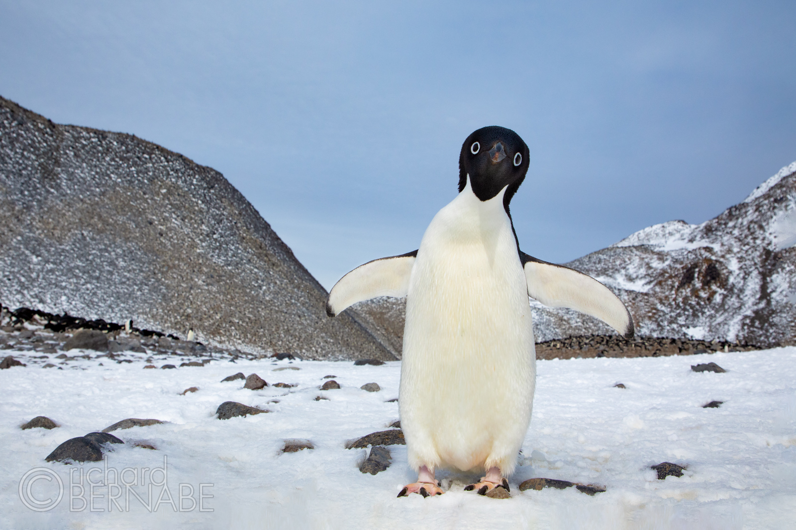
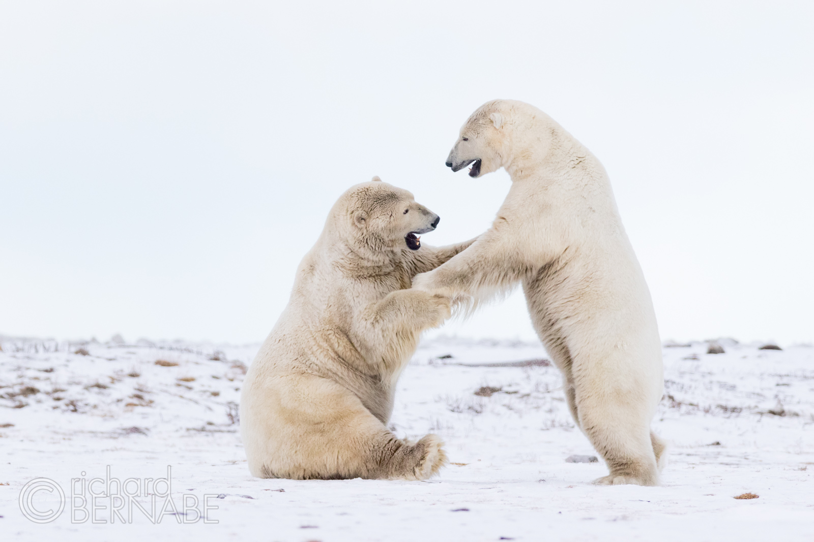
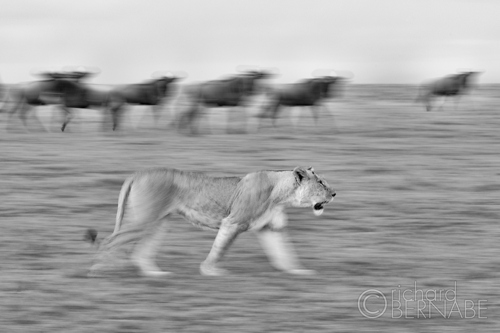
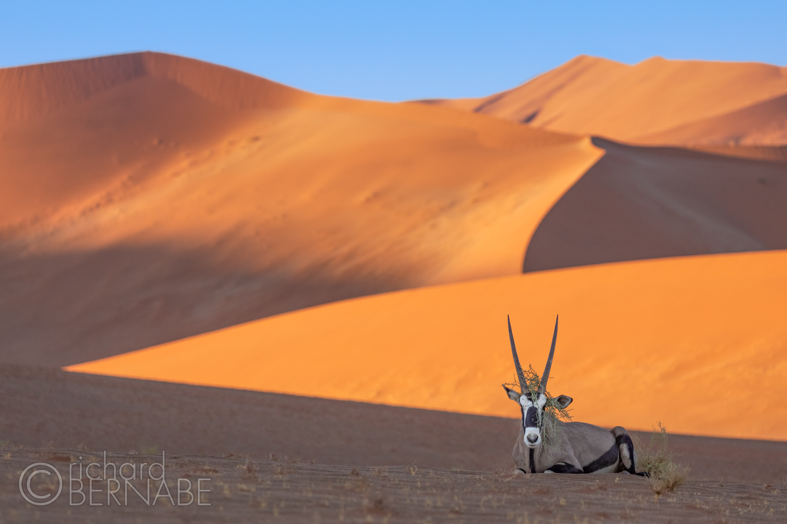
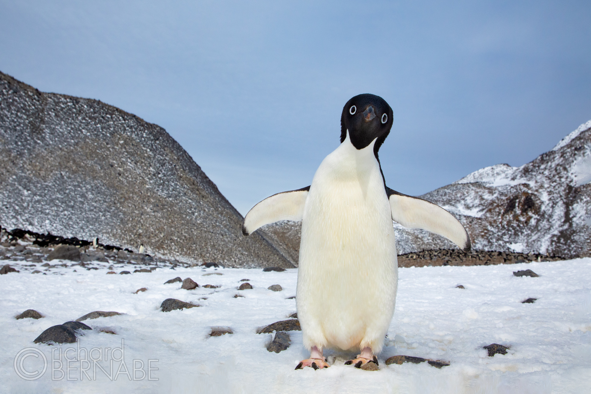
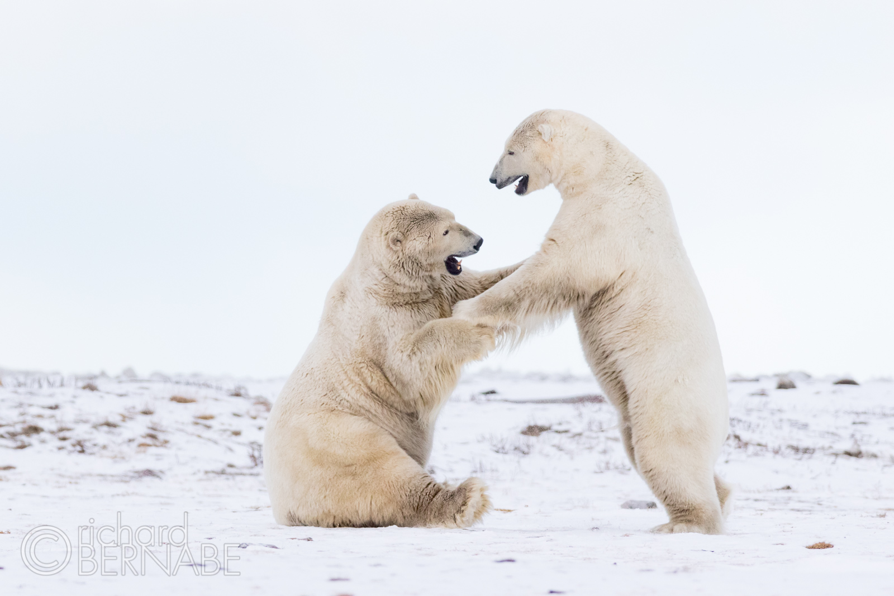

5 Pro Tips For Wildlife Photography
by maxien | apr 24,2022
Look Beyond Conventional Front Lighting
The most frequently used lighting choice when shooting wildlife is front lighting. “Point your shadow at the subject” has been the tired refrain of wildlife photographers for decades since it can be assured the bird or animal will be evenly illuminated. It’s easy. It also happens to be unimaginative and dull. You’ll miss out on other exciting and creative lighting possibilities by always opting for the sun at your back. Side lighting, directional sunlight from a 90-degree angle can reveal texture and add depth to your wildlife subject, creating the illusion of three-dimensions. Backlighting, which is essentially shooting directly into the sun, can give translucent materials such as fur and feathers a beautiful glowing rim light. This effect is much more dramatic than conventional front lighting. However, be aware of possible underexposure, autofocus difficulties, and sun flare when shooting backlit subjects.
Pan With Long Exposures
Add some dynamic movement to your images by introducing some long exposures into your wildlife portfolio. Animals on the move or birds in flight offer suburb opportunities to use slower shutter speeds with camera panning. Freezing the action with faster shutter speeds will nearly always be the initial impulse for most wildlife photographers, but sometimes it’s better to go with the flow! Start with 1/15 second for moving subjects and experiment from there: faster exposures for rapidly moving animals and longer exposures for slower. You want to express motion while preserving the integrity of the animal’s primary features so it’s recognizable, especially the eyes, if possible.
Go Wide
When shooting wildlife, the photographer’s first impulse is often to grab the biggest, longest lens in the bag and zoom in as tight on the subject as possible. This strategy is great if you want to start counting fur fibers and feathers, but it isn’t always the most compelling option. Every so often, try resisting this urge and explore a more expansive view instead. Not only can the surrounding environment give perspective to the moment and help tell a story about the creature’s life and habitat, but it can also help create a more compelling composition by bringing in complementary lines and visual elements. The next time you’re using a telephoto lens, pull your eye away from the viewfinder every so often and look around at the subject’s surrounding environment and ask yourself if it’s adding more to the whole story or not. You would be surprised how often the answer is yes.
Get Low
With but a few exceptions, the absolute worst perspective when photographing wildlife is at a downward angle. Capturing the top of an animal’s or bird’s head isn’t going to move or inspire anyone. Psychologically, it’s condescending and authoritative. Aesthetically, you have the immediate ground as your background and little or no eye contact with your subject. Choosing a low, eye-level perspective, especially with the smaller animals, makes it much easier for the viewer of the image to relate and connect with the animal. The emotional implication is mutual respect, not dominance. Getting low also delivers far more interesting, out-of-focus backgrounds where the subject almost “pops” off the screen.
Show Gesture and Interaction
The three most essential ingredients in a successful wildlife image are composition, light, and gesture. Everyone knows something about composition, and we talked a little about light earlier. Gesture is defined as the “movement of part of the body that expresses an idea or meaning.” We want our images to have meaning, so why not let our animal subjects help us express it? Don’t be satisfied with photos that only show a static animal or bird staring blankly into the camera. Show how these animals interact with one another, play, mate, or hunt for food. Unless you intend to photograph a documentary image for a field guide, don’t be satisfied with a simple stock wildlife portrait. Wait for something special to happen, and then be ready to act!